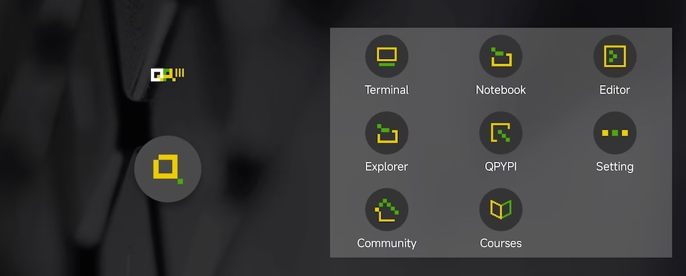
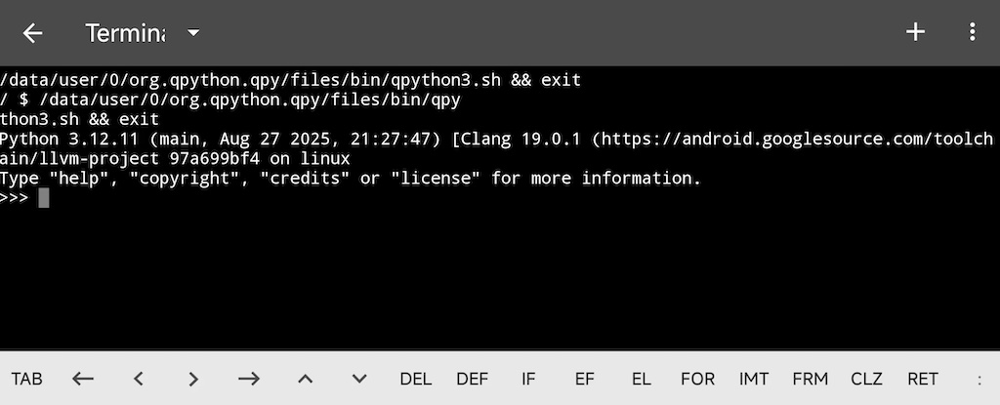
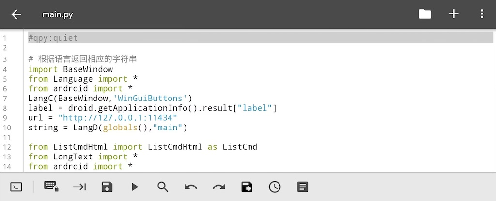

QPython：入门指南¶
本指南将介绍 QPython 的功能并帮助您快速入门。
QPython 概述¶
为什么选择 QPython？
智能手机已成为人们必备的信息和技术助手，一个灵活的解释器引擎可以帮助您高效完成大部分工作，无需复杂的开发过程。
QPython 提供了 惊人的开发体验——借助它的帮助，您可以轻松实现程序，无需复杂的 IDE 安装、编译或打包过程。
QPython 版本¶
针对不同的使用场景，QPython 有多个版本：
- QPython – 由 QPython 团队维护的主要版本，具备 AI 功能，可在 Google Play 等应用商店下载
- QPython+ – 由开源贡献者推出的社区版，提供各种新特性
- QPython Plus – 扩展权限版本（不在应用商店上架）
主要特性¶
- 离线 Python 3.12 解释器 - 运行 Python 程序无需互联网
- QSL4A 集成 - 使用 Python 控制 Android 硬件和 API
- GenAI 能力集成 - 支持本地运行的 LLM、OpenAI 等各种 LLM 库，以及可在 QPython 上进行 Vibe Coding 开发的 AIPyApp
- 扩展包安装 - 支持通过 QPYPI 和 pip 安装扩展包
- 内置编辑器 - 语法高亮和代码编辑
- 多种运行模式 - 除控制台程序外，还支持 Android 原生 UI（通过 QSL4A 接口）以及 Pygame / Turtle / Tkinter 等运行方式
1. 仪表盘¶

安装 QPython 后，点击其图标启动。您将看到带有 QPython 标志和以下功能的主仪表盘：
仪表盘功能¶
QPython 仪表盘提供对所有主要功能的快速访问：
- 终端 — 访问 Python 控制台和 shell 以直接执行命令
- Notebook — 用于数据分析和实验的交互式 Jupyter 风格笔记本
- 编辑器 — 内置代码编辑器，具有语法高亮功能，用于编写 Python 脚本
- 资源管理器 — 浏览和管理您的文件、脚本和项目
- QPYPI — 安装 Python 包和扩展。详见 QPYPI 指南
- 设置 — 配置 QPython 首选项和运行选项
- 社区 — 访问 QPython 社区资源、论坛和帮助
- 课程 — 访问 Python 编程的学习材料和教程
点击任何图标以访问相应的功能。
2. 终端和编辑器¶
终端¶

终端提供 Python 控制台，支持： - 探索对象属性 - 测试语法和想法 - 直接执行命令
使用加号按钮（1）打开新终端标签页，通过下拉菜单（2）切换，并使用关闭按钮（3）关闭。
编辑器¶

编辑器底部功能栏包含以下工具（从左到右）：
- 切换快捷输入（包含 def / if / else / elif / class 等关键词）
- 锁定（防止误触）
- 跳转
- 保存
- 运行
- 搜索
- 撤销
- 重做
- 另存
- 最近文件
- 代码片段
重要提示： 保存时请手动添加 .py 扩展名，因为编辑器不会自动添加。
3. 资源管理器（文件管理）¶
通过 资源管理器 访问脚本和项目，支持浏览、组织和管理所有 Python 文件。
脚本¶
脚本是存储在 /storage/emulated/0/Android/data/org.qpython.qpy/files/scripts3/ 中的单个 Python 文件（针对 Python 3）。
可用操作： - 运行 — 执行脚本 - 打开 — 使用内置编辑器编辑 - 重命名 — 更改脚本名称 - 删除 — 删除脚本
项目¶
项目是包含 main.py 作为入口点的目录。您可以在同一目录中包含其他依赖项和资源。将项目存储在 /storage/emulated/0/Android/data/org.qpython.qpy/files/projects3/ 中。
笔记本¶
Jupyter 风格的笔记本也通过资源管理器进行管理，存储在 /storage/emulated/0/Android/data/org.qpython.qpy/files/notebooks/ 中。
可用操作： - 运行 — 执行笔记本 - 打开 — 探索笔记本内容 - 重命名 — 更改笔记本名称 - 删除 — 删除笔记本
4. 库¶
通过安装第三方库来扩展 QPython 的功能。
包安装方法¶
QPYPI（推荐）
从 QPYPI 安装预编译的库，包括 numpy、scipy 等科学包。
详见 QPYPI 指南。
PIP 客户端
通过 QPython 的 PIP 客户端或 QPYPI 界面安装纯 Python 库：
预编译包
对于具有 C/C++/Rust 依赖的包，使用 QPython 的预编译包：
详见 QPYPI 指南 获取可用包的完整列表。
手动安装
您也可以将库复制到 /storage/emulated/0/Android/data/org.qpython.qpy/files/lib/python3.12/site-packages/。
5. 运行模式¶
QPython 支持多种运行模式以满足不同的用例：
控制台模式¶
常规 Python 脚本的默认模式。
QSL4A 模式¶
通过 QSL4A 库调用 Android API 的脚本。
详见 QSL4A 文档 获取完整的 API 参考。
WebApp 模式¶
使用后端服务器创建基于 Web 的应用程序。需在脚本开头添加以下两行 headers：
例如：
#qpy:webapp:Hello QPython
#qpy://localhost:8080/hello
from bottle import route, run, Bottle
app = Bottle()
@route('/hello')
def hello():
return '<h1>Hello from QPython!</h1>'
run(app, host='localhost', port=8080)
Q 模式（无控制台模式）¶
静默模式运行脚本，不显示控制台。需在脚本开头添加 header：
如果需要运行带 GUI 的 QSL4A 程序且不希望显示控制台信息，推荐使用此模式。6. 社区与支持¶
访问 QPython.org 获取文档、用户社区及帮助问答。
社区链接： - Facebook 群组 - GitHub - 问题反馈
下一步： - 尝试 Hello World 教程 - 探索 QSL4A API 以集成 Android - 了解 QPython 版本
视频介绍¶
下一步¶
如果您已经初步了解了 QPython 的功能，欢迎开始体验编程的乐趣！试试 Hello World 教程 迈出您的第一步。